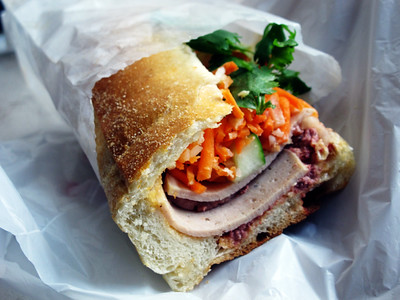

10-min Banh Mi

Banh Mi is a delicious Vietnamese sandwich typically served with a selection of pate, cold cuts, pickled vegetables and fresh cilantro
Ingredients
- Baguette
- Fresh cilantro
- Pate
- Cold cuts
- Butter
- Pickled carrots, julienned
- Pickled white radish, julienned
- Eggs
Steps
- Toast the baguette in the oven
- Meanwhile, fry your eggs on a non-stick pan
- Assemble the ingredients in your toasted baguette
- Top with fresh cilantro